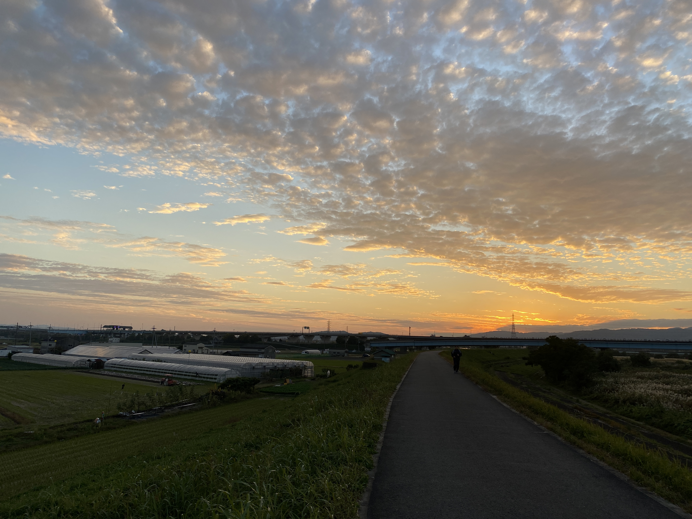
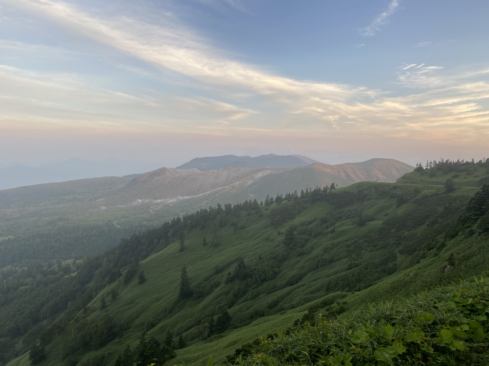

今まで撮った写真の中で綺麗に撮れたものベスト３



←これは、群馬県の草津温泉に向かう途中で撮った写真です。高原が広がっていてとても良い眺めでした。
←第３位
↑この写真は、私が住んでいる近くの堤防から撮った写真です。こんなに綺麗な夕日は、久しぶりに見ました。
↑第２位
この写真は、旅行中のサービスエリアから撮った写真です。街がSAから見下ろす事ができ、また天気も良かったので、すごく良かったです。↓
←第１位